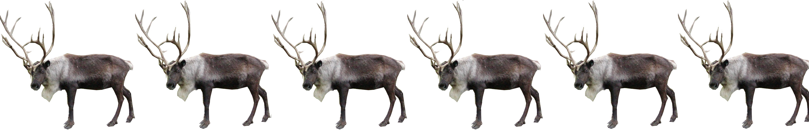

2013-2014

De kerstman heeft een probleem. Hij heeft s sleeën, en voor elk daarvan moet een span van p rendieren komen, en dit d dagen achtereen. Nu heeft hij gelukkig juist sxp rendieren, maar als rendieren mekaar beginnen te leren kennen worden ze nukkig in mekaars buurt. Daarom is het belangrijk dat het zo weinig mogelijk gebeurt dat twee rendieren op verschillende dagen samen in een span zitten.
Maak voor de kerstman een programma dat zijn probleem oplost.